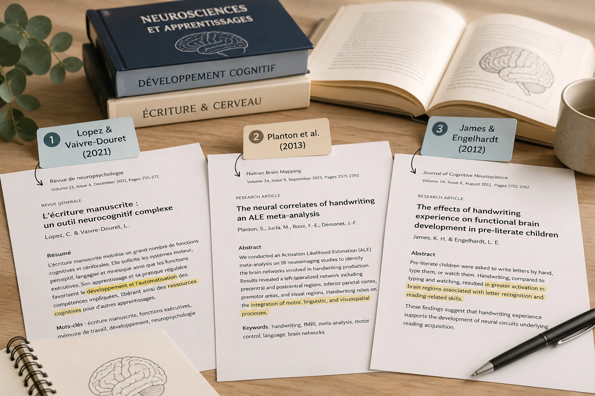

Le coin des curieux
Un espace pour comprendre, en mots simples, ce qui se joue quand on écrit — et pourquoi le geste d'écriture compte, à tout âge.
✎ Rubrique en cours — contenu à compléter avec BéatriceÉcrire, c'est bien plus que tracer des lettres
Quand on écrit à la main, le cerveau, les yeux et la main travaillent ensemble. L'écriture mobilise la mémoire, l'attention, la concentration, la coordination et la motricité fine.
C'est pour cela qu'un accompagnement de l'écriture agit aussi, en douceur, sur la confiance et l'autonomie.
Écrire à la main aide à mémoriser
Écrire un mot à la main, c'est prendre le temps de le former, geste après geste. On observe que ce geste aide à mieux retenir ce que l'on écrit.
Il soutient aussi la façon de se repérer dans l'espace et la compréhension de ce que l'on lit et apprend.
Les intérêts de l'écriture au quotidien
Attention
L’écriture mobilise et soutient la concentration, réduit les distractions.
Mémoire
Elle favorise l’encodage, l’organisation et la rétention des informations.
Fonctions exécutives
Elle aide à planifier, organiser et persévérer dans une tâche.
Créativité
Elle libère les idées et encourage l’imagination.
Langage
Elle enrichit le vocabulaire et la formulation des idées.
Métacognition
Elle permet de prendre du recul et de mieux se comprendre.
Régulation émotionnelle
Elle aide à exprimer ses émotions et à retrouver un équilibre intérieur.
Estime de soi
Elle valorise l’expression de soi et renforce la confiance.
Les bienfaits de l'écriture manuscrite — ce que dit la science
Écrire à la main, c'est nourrir le cerveau : voici ce qu'en disent trois études scientifiques.

Lopez & Vaivre-Douret (2021) · Revue de Neuropsychologie, 13(4), 255-277
L'écriture manuscrite mobilise simultanément des compétences motrices, perceptives, sensorielles et cognitives. Son apprentissage favorise le développement de l'attention, de la mémoire de travail, des fonctions exécutives et de la coordination visuomotrice. L'automatisation du geste libère ensuite des ressources cognitives pour les apprentissages scolaires.
Planton et al. (2013) · Cortex
Une méta-analyse d'études en imagerie cérébrale montre que l'écriture manuscrite sollicite un vaste réseau cérébral (hémisphère gauche) impliquant langage, planification motrice, intégration sensorimotrice et traitement orthographique. Elle ne se limite pas à un mouvement de main : plusieurs processus cognitifs essentiels sont coordonnés.
James & Engelhardt (2012) · Journal of Cognitive Neuroscience, 24(8), 1752-1762
Chez des enfants pré-lecteurs, seule l'écriture manuscrite (vs clavier ou observation) active les régions cérébrales impliquées dans la reconnaissance des lettres et la future lecture. Le geste d'écriture participe activement à la construction des représentations cérébrales du langage écrit.